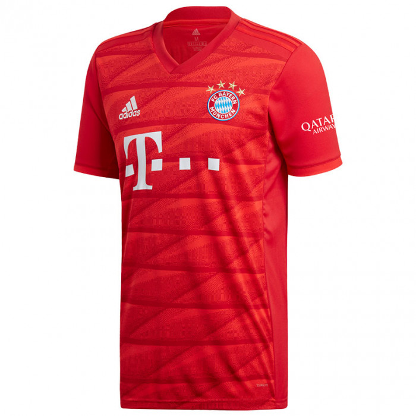
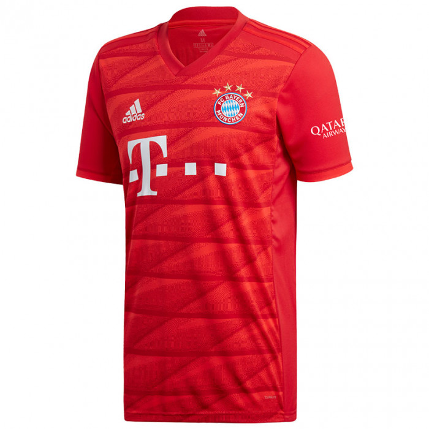

Kod osnutka kluba navedene su glavne boje Bayerna, crvena i plava, ali se igralo u bijelim dresovima i crnim hlačama do 1905. godine, kad se Bayern pridružio MSC-u. MSC je odredio da se igra u crvenim hlačama. Također, mladi igrači Bayerna (juniori) su često pogrdno zvani "crveni-šorcevi" (roten Hosen). Bayern je većinom igrao u crveno-bijeloj kombinaciji od svog postojanja, ali ponekad i u plavoj kombinaciji. U sezoni 1969./70., dres Bayerna bio je plavo-bijel, a hlače i čarape također plave. Sličan stil dresa pojavio se i 1995. godine, kada je po prvi put plava bila dominantna boja. Od 1998. godine, momčad nosi svoje izvorne boje. Zamjenski (gostujući) dres Bayerna bio je u raznim bojama tijekom godina, uključujući bijelu, crnu, plavu i zlatno-zelenu. Bayern također ima i treći dres, namijenjen za međunarodne utakmice. Od 2008. do 2009. godine, domaći dres je crven s bijelim prugama, a od 2009., dres je potpuno crven, s bijelim ovratnikom. Zamjenski je dres od 2008. plave boje, dok je treći dres bijel. Osamdesetih i devedesetih godina 20. stoljeća Bayern je koristio poseban zamjenski dres dok je igrao sa 1. FC Kaiserslauternom, predstavljajući brazilske boje, žutu i zelenu.
.jpg)
.jpg) Dresovi
2019./2020.
Dresovi
2019./2020.